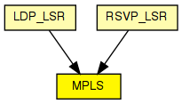

Implements the MPLS protocol.
MPLS module is added between layer 2 and 3 in the OSI model for fast packet switching. MPLS should be transparent to signalling protocols. Signalling protocol currently implemented in this simulation is RSVP-TE.
Operations
MPLS packets are represented by the message class MPLSPacket. The local LIB (Label Information Base) is stored in a LIBTable module in the LSR.
For most of the time, the MPLS module will do the label swapping and message forwarding. Upon receiving a labelled packet from another LSR, the MPLS first extract the incoming interface and incoming label pair, and then look up the local LIB table. If an outgoing label and an outgoing interface can be found, the module will perform appropriate label operations (PUSH, POP, SWAP) based on the "outLabel" vector containing label and operation pairs.
Collaborations
MPLS module is required to interact with L2 (Link Layer) and L3 (Network Layer) in the OSI model. In addition, it needs to obtain label information from the LIB component and label query result from the LDP module. Messages the model communicates with L2 and Network Layers are L2 packets (PPP, Frame Relay, ATM, Ethernet, etc.), and IP native packets. Specifically, MPLS module encapsulates IP packet and is encapsulated in L2 packet. Different L2 protocols may require different methods of encapsulation to inherit the L2's QoS. This implementation follows a generic approach; it assumes no information of QoS from the link layer.
The following diagram shows usage relationships between types. Unresolved types are missing from the diagram.
The following diagram shows inheritance relationships for this type. Unresolved types are missing from the diagram.
| Name | Type | Description |
|---|---|---|
| LDP_LSR | compound module |
An LDP-capable router. |
| RSVP_LSR | compound module |
An RSVP-TE capable router. |
| Name | Type | Default value | Description |
|---|---|---|---|
| classifier | string |
a module which implements the IClassifier C++ interface |
| Name | Value | Description |
|---|---|---|
| display | i=block/switch |
| Name | Direction | Size | Description |
|---|---|---|---|
| netwIn [ ] | input | ||
| netwOut [ ] | output | ||
| ifIn [ ] | input | ||
| ifOut [ ] | output |
// // Implements the \MPLS protocol. // // MPLS module is added between layer 2 and 3 in the OSI model for fast packet // switching. MPLS should be transparent to signalling protocols. Signalling // protocol currently implemented in this simulation is \RSVP-TE. // // Operations // // MPLS packets are represented by the message class MPLSPacket. // The local LIB (Label Information Base) is stored in a LIBTable module // in the LSR. // // For most of the time, the MPLS module will do the label swapping and // message forwarding. Upon receiving a labelled packet from another LSR, the // MPLS first extract the incoming interface and incoming label pair, and then // look up the local LIB table. If an outgoing label and an outgoing interface // can be found, the module will perform appropriate label operations (PUSH, // POP, SWAP) based on the "outLabel" vector containing label and operation // pairs. // // Collaborations // // MPLS module is required to interact with L2 (Link Layer) and L3 (Network // Layer) in the OSI model. In addition, it needs to obtain label information // from the LIB component and label query result from the LDP module. Messages // the model communicates with L2 and Network Layers are L2 packets (PPP, // Frame Relay, ATM, Ethernet, etc.), and \IP native packets. Specifically, // MPLS module encapsulates \IP packet and is encapsulated in L2 packet. // Different L2 protocols may require different methods of encapsulation to // inherit the L2's QoS. This implementation follows a generic approach; it // assumes no information of QoS from the link layer. // simple MPLS { parameters: string classifier; // a module which implements the IClassifier C++ interface @display("i=block/switch"); gates: input netwIn[] @labels(IPDatagram); output netwOut[] @labels(IPDatagram); input ifIn[] @labels(MPLSPacket,IPDatagram); output ifOut[] @labels(MPLSPacket,IPDatagram); }